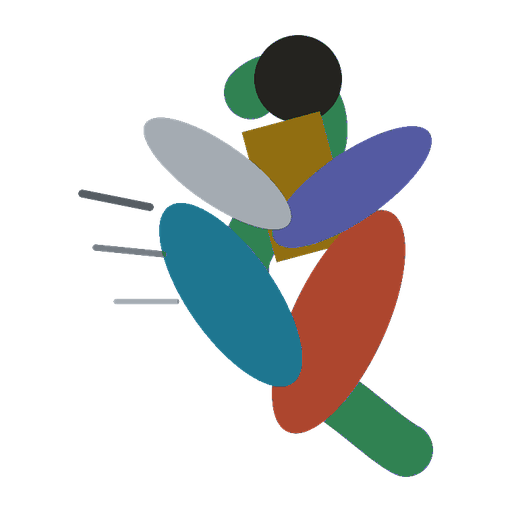
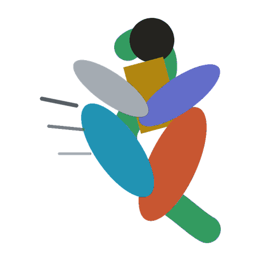
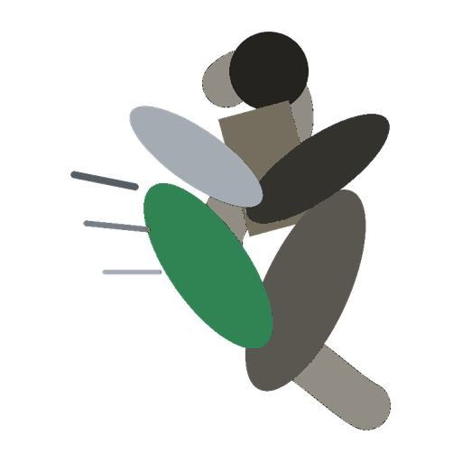
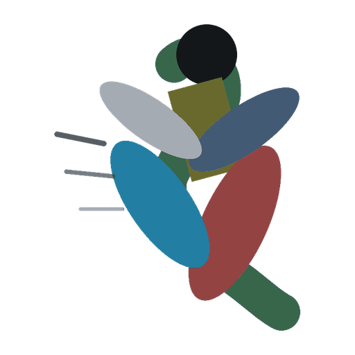

LOGO × METRIC IDENTITIES — 4 RECOLORS OF THE APP ICON · EACH SHOWN ON STONE + INK
current
Current icon
The shipped five-ellipse athlete. Muted, low mutual contrast — the reason for this experiment.
1a

Metric identities, exact
Each ellipse takes its metric's token verbatim: verdant readiness, teal HRV, indigo sleep, rust strain, ochre load. Icon and data language become one system.
1b

Metric identities, brightened
Same five hues pushed +1 step in chroma and lightness for icon duty — tokens are tuned for text on stone; icons can afford more saturation. Strongest shelf presence.
1c

Ink + verdant
Everything drops to the ink/travertine ramp except the lead ellipse in readiness green — the "go" signal as the brand. Quietest, most Field Notes.
1d

Current hues, contrast-boosted
Keeps today's character; every family gets more saturation and lightness spread so the ellipses separate. Safest change — nobody notices, everything reads better.
IN-CONTEXT: HEADER LOCKUP AT 28PX + HOME-SCREEN TILE AT 60PX